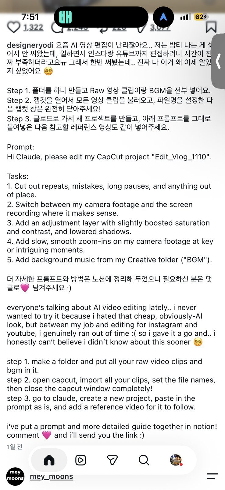

테크 · 사진 · 2026-11-24
클로드로 캡컷 영상 편집하는 3단계 방법과 프롬프트
인스타그램 사용자 designeryodi가 Raw 영상과 BGM을 폴더에 정리하고 캡컷에서 불러온 뒤 클로드에 프롬프트와 레퍼런스 영상을 넣어 AI로 영상 편집을 맡기는 방법을 소개한다.

- 작성자는 AI 편집 특유의 티 나는 결과가 싫어 쓰지 않았지만, 일과 인스타그램·유튜브 편집을 병행하며 시간이 부족해 사용해 봤다고 말한다.
- 1단계로 폴더를 하나 만들어 Raw 영상 클립과 BGM을 모두 넣는다.
- 2단계로 캡컷에서 모든 영상 클립을 불러오고 파일명을 설정한 뒤 캡컷 창을 완전히 닫는다.
- 3단계로 클로드에서 새 프로젝트를 만들고 프롬프트를 그대로 붙여넣은 뒤 참고할 레퍼런스 영상도 함께 넣는다.
- 프롬프트는 반복·실수·긴 공백 컷 편집, 카메라 영상과 화면 녹화 전환, 채도·대비를 올리고 그림자를 낮춘 조정 레이어 추가를 요청한다.
- 또한 주요 순간에 카메라 영상에 느리고 부드러운 줌인을 넣고, Creative 폴더의 BGM을 배경음악으로 추가하도록 지시한다.
- 더 자세한 프롬프트와 방법은 노션에 정리되어 있으며 댓글을 남기면 링크를 보내준다고 안내한다.